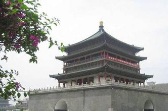
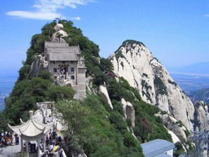

Top Attractions
Terra Cotta Warriors and Horses
The Terra Cotta Warriors and Horses are the most significant archeological excavations of the 20th century. Work is ongoing at this site, which is around 1.5 kilometers east of Emperor Qin Shi Huang's Mausoleum in Lintong, Xian, Shaanxi Province. It is a sight not to be missed by any visitor to China.
Upon ascending the throne at the age of 13 (in 246 BC), Qin Shi Huang, later the first Emperor of all China, had begun to work for his mausoleum. It took 11 years to finish. It is speculated that many buried treasures and sacrificial objects had accompanied the emperor in his after life. A group of peasants uncovered some pottery while digging for a well nearby the royal tomb in 1974. It caught the attention of archeologists immediately. They came to Xian in droves to study and to extend the digs. They had established beyond doubt that these artifacts were associated with the Qin Dynasty (211-206 BC).
City Wall
Adorned with a moat and the circular City Wall Park, the wall surrounds the square inner city. It is the most complete city wall to survive in the country, as well being one of the largest ancient military defensive systems in the world, built first in the early Ming Dynasty (1368-1644) and renovated in recent years.
When Zhu Yuanzhang, the first Emperor of the Ming Dynasty (1368-1644), captured Huizhou, a hermit named Zhu Sheng admonished him that he should 'built high walls, store abundant food supplies and take time to be an Emperor,' so that he could fortify the city and unify the other states. After the establishment of the Ming dynasty, Zhu Yuanzhang followed his advice and began to enlarge the wall built initially during the old Tang Dynasty (618 - 907), creating the modern Xian City Wall. It's the most complete city wall that has survived in China, as well being one of the largest ancient military defensive systems in the world.
Big Wild Goose Pagoda
Located in the Qujiang Tourist Area to the southeast of the city center, this solemn ancient pagoda inside the Da Ci’en Temple was originally built in 652 during the reign of Emperor Gaozong of the Tang Dynasty (618-907). It holds the old Buddhist relics and classics taken from India by the hierarch Xuanzang. The pagoda and its surrounding areas nowadays become a popular resort for both the locals and the tourists. The original pagoda was built during the reign of Emperor Gaozong of Tang (r. 649-683), then standing at a height of 54 m (177 ft). However, this construction of rammed earth with a stone exterior facade eventually collapsed five decades later. The ruling Empress Wu Zetian had the pagoda rebuilt and added five new storeys by the year 704; however, a massive earthquake in 1556 heavily damaged the pagoda and reduced it by three stories, to its current height of seven stories. The entire structure leans very perceptibly (several degrees) to the west. Its related structure, the 8th century Small Wild Goose Pagoda in Xi'an, only suffered minor damage in the 1556 earthquake (still unrepaired to this day). The Giant Wild Goose Pagoda was extensively repaired during the Ming Dynasty (1368–1644) and renovated again in 1964. The pagoda currently stands at a height of 64 m (210 ft) tall and from the top it offers views over the current city of Xi'an.
Bell Tower
The Bell Tower, is a stately traditional building, that marks the geographical center of the ancient capital. From this important landmark extend East, South, West and North Streets, connecting the Tower to the East, South, West and North Gates of the City Wall of the Ming Dynasty.
The wooden tower, which is the largest and best-preserved of its kind in China, is 36 meters (118 feet) high. It stands on a brick base 35.5 meters (116.4 feet) long and 8.6 meters (28.2 feet) high on each side. During the Ming Dynasty, Xian was an important military town in Northwest China, a fact that is reflected in the size and historic significance.
Shaanxi History Museum
Shaanxi Province, is considered one of the birth places of Chinese culture, the capital of thirteen dynasties such as Zhou (1046 BC-256 BC), Han (202 BC-220) and Tang (618-907), and has its own unique history and cultural features. The Shaanxi History Museum in Xian, regarded as “the pearl of ancient dynasties and house of Chinese treasures”, gives a miniature overview of the thousands of years of Chinese history and the splendid ancient cultures of olden times.
Mt. Huashan
Driving eastward for Lintong or taking City Bus U5 (306) from the east square of the railway station, first comes the Banpo Museum which built on the ancient human village relics of Neolithic Yangshao culture. Terracotta Army is the most attractive along the east scenery line. A few minutes' drive away, there is the Huaqing Hot Springs at the north foot of Mt. Lishan, which is favored for its scenic beauty and palace complex, becoming well-known as the spa place for Concubine Yang of Tang (618-907) Emperor Xuanzong. If leaving Lintong by train or bus, Mt. Huashan, one of the five sacred mountains in China famed for precipitous crags, narrow and steep paths, can be reached within three hours. Many visitors choose to climb the mountain at night and wait for the sun rise on the top, which extends your vacation in Xian to be a memorable experience.